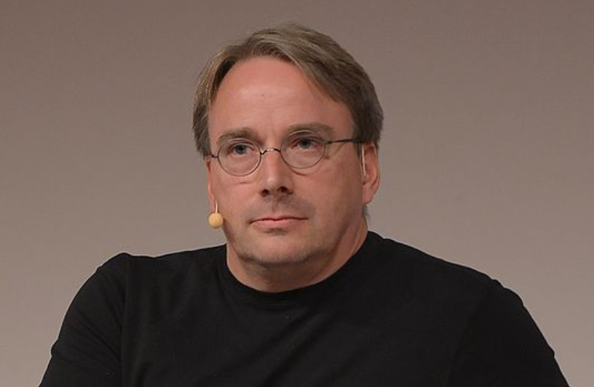
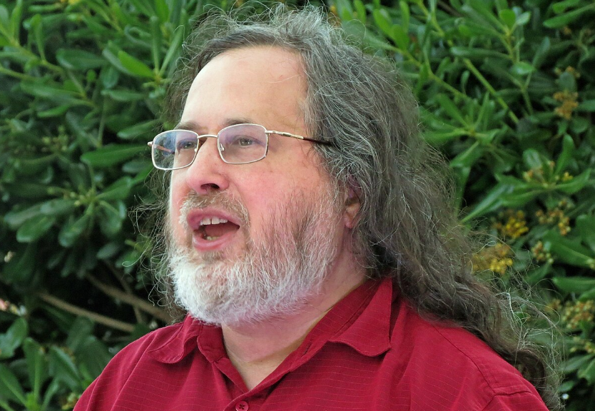

BytesOfProgress
Wiki
History of GNU / Linux
In 1983, Richard Stallman, a prominent computer programmer and software freedom activist, laid the groundwork for the Free Software Foundation (FSF). His motivation stemmed from a growing concern over the increasing restrictions of proprietary software and the erosion of user freedom growing in the computing landscape.
In this time Richard Stallman also initiated the GNU Project, a groundbreaking endeavor aimed at developing a fully free and open-source Unix-like operating system. However, by the early 1990s, the project lacked a crucial component: the kernel, the core part of an operating system that interacts with hardware and manages system resources.
In 1991, when Linus Torvalds used Minix, he spent a month familiarizing himself with the system. He also learned about many of the weak points of Minix, which Tanenbaum developed primarily for teaching purposes.
Torvalds was particularly frustrated with the terminal emulation he needed to log into the university computer and get online. It was winter, a time of year that, according to Torvalds, is not suitable for leaving the house in Finland. So he decided to write his own hardware-level terminal emulator which later evolved into the Linux kernel.
Initially running on the Intel 80386 processor (i386), Linux embraced the principles of openness by adopting the GNU General Public License (GPL).
On July 3rd, 1991, he posted a request for a readable version of the POSIX specifications on the Minix newsgroup. This posting alerted some people to Torvald's work. Ari Lemmke, who worked as an assistant at Helsinki University of Technology, contacted Torvalds with an offer to provide him with space on the university's FTP server for public access for the operating system he was apparently working on.
On August 25th, 1991, Torvalds finally announced in the comp.os.minix newsgroup that he was working on a free operating system. A few days later, on September 17th 1991, the shell for his operating system was also functional, and Torvalds put the kernel, which at that time only had 10,000 lines of source code, online with version number 0.01. Linux got its name from Ari Lemmke, who didn't like the name Freax planned by Torvalds and quickly named the FTP folder Linux, a name that Torvalds had previously only used internally for himself.
************************************************************************************************
From: torvalds@kruuna.helsinki.fi (Linus Benedict Torvalds)
Newsgroups: comp.os.minix
Subject: What would you like to see most in minix?
Message-ID: <1991Aug25.205708.9541@klaava.Helsinki.FI>
************************************************************************************************
Hello everybody out there using minix -
I'm doing a (free) operating system (just a hobby, won't be big and professional like gnu) for 386(486) AT clones. This has been brewing since april, and is starting to get ready. I'd like any feedback on things people like/dislike in minix, as my OS resembles it somewhat (same physical layout of the file-system (due to practical reasons) among other things).
I've currently ported bash(1.08) and gcc(1.40), and things seem to work. This implies that I'll get something practical within a few months, and I'd like to know what features most people would want. Any suggestions are welcome, but I won't promise I'll implement them :-)
Linus (torvalds@kruuna.helsinki.fi)
PS. Yes - it's free of any minix code, and it has a multi-threaded fs. It is NOT portable (uses 386 task switching etc), and it probably never will support anything other than AT-harddisks, as that's all I have :-(The software to use with the kernel was software developed as part of the GNU project licensed under the GNU General Public License, a free software license. The first release of the Linux kernel, Linux 0.01, included a binary of GNU's Bash shell.
In the "Notes for linux release 0.01", Torvalds lists the GNU software that is required to run Linux:
"Sadly, a kernel by itself gets you nowhere. To get a working system you need a shell, compilers, a library etc. These are separate parts and may be under a stricter (or even looser) copyright. Most of the tools used with linux are GNU software and are under the GNU copyleft. These tools aren't in the distribution - ask me (or GNU) for more info."
Initially, commercial use of Linux was not permitted. Then in the fall of 1991, Torvalds went with Lars Wirzenius, the only other Swedish-speaking computer science student at the University of Helsinki, to a lecture by Richard Stallman about the GNU project. As the popularity of Linux increased and more and more people switched from Minix to Linux, he announced in January 1992 that the project would soon be placed under the GPL.
In the same month, a now famous argument about the concept of Torvalds' operating system took place between him and Andrew Tanenbaum under the title Linux is obsolete. However, Tanenbaum's criticism did not affect the popularity of Linux. The free license ensured that Linux spread more and more quickly and was also ported to other platforms. When Linux 1.0 was released on March 14th 1994, Torvalds was given access to the computer science department's main lecture hall by his university for the presentation, which was also broadcast on Finnish television.
According to Torvalds, Linux began to gain importance in 1992 after the X Window System (xorg) was ported to Linux by Orest Zborowski, which allowed Linux to support a GUI for the first time.
After the Linux kernel was released under the GNU General Public License (GPL), developers recognized the compatibility between the GNU Project's utilities and the Linux kernel.
The combination of the GNU Project's software with the Linux kernel resulted in a complete Unix-like operating system. This combined system provided a viable alternative to proprietary operating systems, embodying the principles of software freedom and openness of both the GNU Project and the Linux community.
Over the time, GNU/Linux has become a cornerstone of modern computing, powering servers, desktops, laptops, embedded systems, and many other devices. It embodies the principles of free software and open-source development, collaboration, innovation, and user freedom within the software ecosystem.
 Linus Benedict Torvalds, 2014 / Richard Matthew Stallman, 2015
back